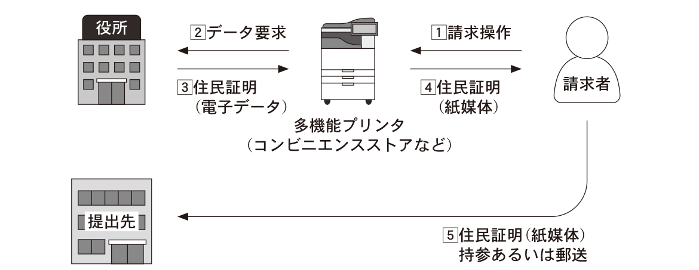
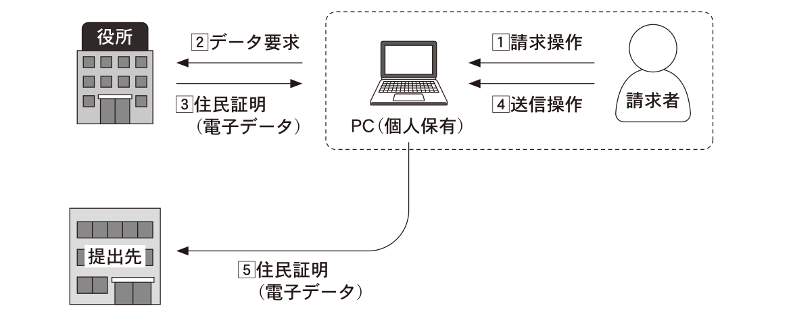
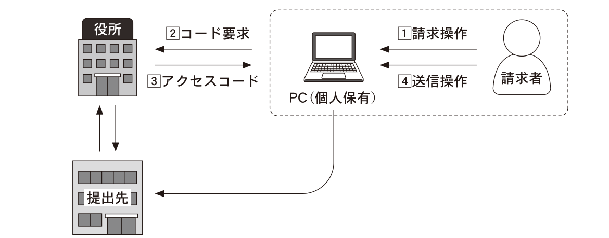
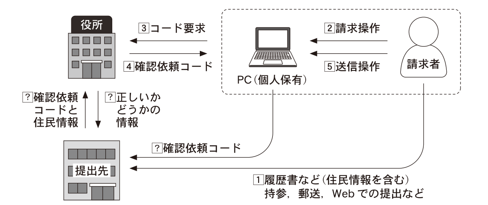

第2問 次の問い（A・B）に答えよ。（配点30）
A 次の文章を読み，後の問い（問1～3）に答えよ。
A 国では，役所が発行する住民証明に，住民の氏名，生年月日，住所（以下，この三つをまとめて住民情報と呼ぶ。）が記載されている。住民情報は就職先企業などから求められたときに自分自身で申告することができる。企業は，申告された住民情報が役所に登録された住民情報と一致しているかを確認するために，役所が発行する住民証明の提出を一緒に求めることがある。紙に印刷された役所発行の住民証明（紙媒体）を取得するには，請求者が役所に直接訪れるだけでなく，コンビニエンスストアなどに設置されている多機能プリンタで印刷しても入手することができる。
図1は，A 国の住民証明（紙媒体）発行のための情報システムを表したものである。ここで，1，2，…の数字は操作・要求やデータの移動が発生する時間的順序を表している。なお，以降の問題を含め，住民証明の請求に必要となる個人認証は請求操作に含まれており，認証に関する不正行為への対策は別途行われているとする。

問1 次の文章を読み，空欄 ア ・ イ に入れるのに最も適当なものを，後の解答群のうちから一つずつ選べ。ただし，解答の順序は問わない。
図1に示した情報システムでは，提出先に住民証明（紙媒体）を持参あるいは郵送しなければならない。そこで，住民証明（電子データ）を電子的に提出できるように，情報システムを改良する。
図2に示す情報システムでは，請求者が個人保有のパーソナルコンピュータ（PC）からインターネットを介して住民証明（電子データ）を請求して入手できる。図1の情報システムと異なり，図2の情報システムには「 ア 」や「 イ 」といった特徴がある。

問2 次の文章を読み，空欄 ウ ～ カ に入れるのに最も適当なものを，後の解答群のうちから一つずつ選べ。
図2に示した情報システムでは，入手した住民証明（電子データ）を請求者が勝手に変更してしまうおそれがある。請求者が住民証明（電子データ）を変更できないようにするために，アクセスコードを利用する方式に情報システムを改良する。
図3に示す情報システムでは，役所は請求ごとにアクセスコードを発行する。アクセスコードを役所に送信することで，対応する住民証明（電子データ）を入手できる。

オウエ図2の情報システムと異なり，図3の情報システムでは カ 。
問3 次の文章を読み，空欄 キ ～ ケ に入れるのに最も適当なものを，後の解答群のうちから一つずつ選べ。
図3に示した情報システムでは，アクセスコードが第三者に漏れると住民情報が流出するおそれがある。住民情報は請求者自身が提出先に伝えることができるので，そのことを利用して情報システムを図4のように改良する。
図4に示す情報システムでは，確認依頼コードを利用する。なお，図4では，図の一部を？で隠してある。
図1～3に示した情報システムでは，役所の役割は キ することである。一方，図4に示す情報システムでは，役所の役割を キ することから ク することに変更している。図3の情報システムにおけるアクセスコードとは異なり，図4の情報システムにおける確認依頼コードは， ケ 。
